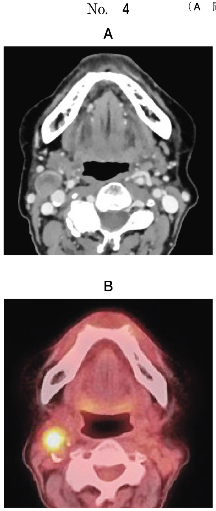

齲蝕予防は宿主（歯）、細菌、食事、時間の4因子に対するアプローチで行う。
| 時期 | 口腔清掃法 | ポイント |
|---|---|---|
| 乳歯萌出前 | ガーゼによる清拭 | 口腔内を触られることに慣れさせる |
| 乳歯萌出後（〜1歳） | 寝かせ磨き（仕上げ磨き） | 保護者が行う、膝の上に寝かせて |
| 2〜3歳 | 自分磨き＋仕上げ磨き | 本人にも歯ブラシを持たせる |
| 4〜5歳 | 自分磨き＋仕上げ磨き、フッ化物洗口 | ぶくぶくうがいができれば洗口開始 |
※1歳児の口腔清掃指導では寝かせ磨きとガーゼによる清拭が適切。歯間ブラシや歯垢染め出し液は不適切。
| 年齢 | 使用量 | フッ化物濃度 |
|---|---|---|
| 歯萌出〜2歳 | 米粒大（1〜2mm） | 500 ppmF |
| 3〜5歳 | えんどう豆大（5mm） | 500 ppmF |
| 6〜14歳 | 1cm程度 | 1,000 ppmF |
| 15歳以上 | 2cm程度 | 1,450 ppmF |
| 方法 | 濃度 | 特徴 |
|---|---|---|
| フッ化物配合歯磨剤 | 〜1,500 ppmF | 家庭で毎日使用、最も普及 |
| フッ化物洗口 | 225〜900 ppmF | 4〜5歳から、学校での集団応用 |
| フッ化物歯面塗布 | 9,000 ppmF | 歯科医院で実施、高濃度 |
| 水道水フロリデーション | 0.7〜1.0 ppmF | 公衆衛生的応用（日本では未実施） |
1歳の女児。上顎乳前歯部の歯肉の腫れを主訴として来院した。初診時の口腔内写真（別冊No.8）を別に示す。
口腔清掃指導として適切なのはどれか。2つ選べ。

【解説】1歳児の口腔清掃指導として適切なのは寝かせ磨きとガーゼによる清拭である。歯磨剤は誤飲のリスクがあり、この時期は使用しないか、使用しても少量。歯間ブラシは乳幼児には不適切。歯垢染め出し液も1歳児には不要。
成人に対するフッ化物配合歯磨剤の使用に関する指導内容で適切なのはどれか。2つ選べ。
【解説】成人には高濃度のフッ化物（1,450 ppmF）を推奨し、ブラッシング直後は飲食を避けることでフッ化物の効果を維持する。米粒大は乳幼児の使用量であり成人には不足。複数回吐出や多めの洗口はフッ化物を洗い流してしまうため不適切。